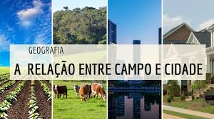
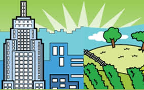
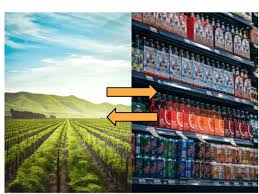
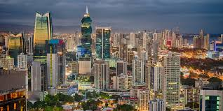
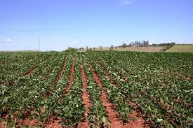

Sobre a CIDADE E O CAMPO
O campo é caracterizado por uma comunidade rural, geralmente centrada na agricultura, com uma forte conexão com a terra e uma estrutura social mais tradicional. A cidade, por sua vez, é um espaço urbano, caracterizado por uma comunidade diversificada, economia mais complexa e uma estrutura social mais fluida. .
A cidade não apenas controla e comercializa a produção do campo, mas também passa a transformá-la e agregar valor à esta, expandindo sua esfera de dominação. O campo, que até então era praticamente autossuficiente, se vê dependente da cidade, em alguns casos, até para compra de produtos básicos de vida, como alimentos. !





